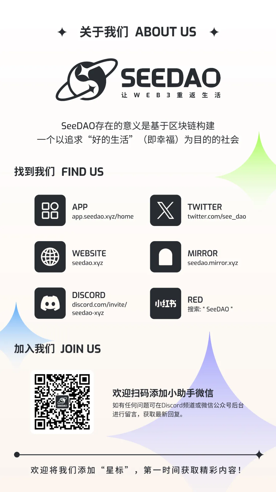

“
「Web3 ×乡建启蒙计划」第二期直播精彩来袭！诚邀 LXDAO、SeeDAO 及南塘 DAO，坐客国仁乡建直播间一同开启一场以 DAO 为名的对话，深入 DAO 的运转机制，探讨 DAO 如何助力赋能乡建er，本周五晚 8 点，我们不见不散~
在上一期分享中，我们交流了区块链作为一本公开透明不可篡改账本的原理，这一次我们来聊聊区块链上的组织形态——Decentralized Autonomous Organization（DAO），直译为：去中心化自治组织。
DAO 诞生于区块链，从根本上带着公开、透明、不可篡改的账本特性，奠定了 DAO 异于传统组织的可信、开放以及对集体共识的强调。
如果说区块链是通过哈希前后咬合无限延展的链，DAO 就是一张以人为节点相互联系的多向网络，人们对 DAO 的期待基于这样一种假设：在充分清晰的共识之下，在充分的可信、开放之上，人们可以放心的发挥主观能动性去追求集体利益的最大化，在彼此动态协调的过程中，使组织内生产要素可以在各个生产流程中高效流通充分利用。
而对于乡村建设者们来说，在过去二十余年的发展中，大家一直秉持自发自主、因地制宜的分布式发展模式，实现了费孝通先生说的“各美其美，美人之美”，下一步则要往“美美与共”出发，如何促进乡建间连成网络，协同发展，实现 1+1＞2 的效果，DAO 或许有值得借鉴的地方。
故本次「Web3 ×乡建双边启蒙计划」第二期直播，我们邀请了 LXDAO、SeeDAO 及南塘 DAO，与国仁乡建一同进行一场以 DAO 为名的对话，既分享了解 DAO 如何运转，也探讨 DAO 可以如何助力乡建er。
直播主题：促进乡建协同发展，多中心自治组织（DAO）有何优势？
直播时间：8 月 30 日 20:00-21:30（UTC+8）
直播链接：
https://live.bilibili.com/h5/21863611?visit_id=nc1bj8o3isg
直播议程：
1. 启蒙计划介绍
2. 嘉宾介绍
3. LXDAO/SeeDAO/南塘DAO介绍
4. 简述乡建团队合作现状及期待
5. 自由讨论DAO可以从哪些方面提供帮助
「Web3 ×乡建双边启蒙计划」旨在为探求新质生产力和新型生产关系发展的伙伴们，提供一个相互促进，彼此滋养，共同生长的学习交流空间。
在过去二十余年的发展中，当代乡村建设一直秉持自发自主、因地制宜的分布式发展模式，这与第三代互联网（Web3）的核心理念高度契合。Web3 以数字技术为乡村打开面向世界的通路，乡村为 Web3 提供扎根落地的养分，汇集二者的原点便是启蒙计划。
更多详情内容：赛博社会主义试点！Web3 × 乡建双边启蒙计划正式启动
加入我们
通过共同学习与交流研讨，「Web3 ×乡建双边启蒙计划」致力于促进 Web3 探索者更好的进入乡村建设的实践场景，推动乡建实践者深入学习了解 Web3的基本原理和应用，推进彼此在相互启蒙中探究乡建与 Web3 融合的可能性，以共建美好乡村。我们诚挚的邀请每一位对 Web3 充满热情的爱好者或探索者，亦或者对乡村建设怀揣理想、拥有独到见解的实践者或研究员，加入我们！一起为乡村建设注入新活力，让乡村的每个角落都焕发新生机👇
梁少雄
陕西宝鸡陇县人，社会工作师。蒲韩新青年公社联合创始人、山西光明公益发展中心理事长、山西晋土耕耘社会化生态农业产销合作社理事长、北京梁漱溟乡村建设中心项目主管，永济市儒学文化促进会乡村振兴委员会主任。
2015 年 3 月至今工作生活于山西永济韩阳镇下寺村，专注于乡村建设青年人才培养和区域性乡村建设协同网络共创。
LXDAO 是一个专注于可持续地支持有价值的 Web3 公共物品以及开源项目的研发 DAO，旨在汇聚一群良心 Builder，为 Web3 公共物品和开源项目持续助力，以共建公共物品良好生态网络。

SeeDAO 是一个以追求“好的生活”为目的的数字城邦，致力于连接 100万Web3 游民，促进人与人之间的连接，促进个人的内在发现与涌现，提供对大家有益的公共生活。
·END·
